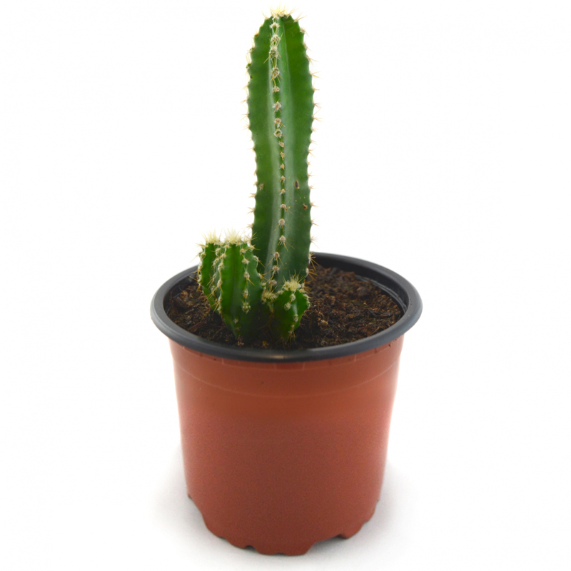

volver
volver

Cactus peruvianus o cactus del ordenador
El Cereus peruvianus, es el Cereus más conocido y ampliamente distribuido. Conocido como Cereus Uruguayanus, también se le llama, Cereus repandus.
Riego: El riego durante el período de crecimiento activo, debe ser un riego moderado y durante el período de descanso invernal, regaremos, si acaso, una vez al mes moderadamente.
Luz: En cuanto a la exposición en el exterior, a la semisombra cuando es joven, pleno sol más de adulto. Entonces, le gusta la luz solar fuerte, pero es tolerante y le va bien con la sombra ligera durante los calurosos meses de verano.
$4.990
Stock: 12